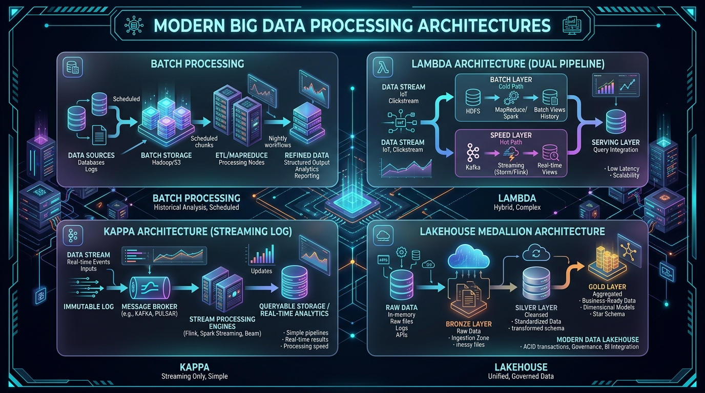

Panduan komprehensif memahami bagaimana industri teknologi mengolah miliaran data: mulai dari pemrosesan tumpukan periodik Batch Processing, pendekatan hibrida Lambda, revolusi aliran tunggal Kappa, hingga standar modern Lakehouse Medallion.
Peta konsep visual yang merangkum keempat arsitektur dalam tata letak isometrik futuristik beresolusi tinggi.

Klik gambar untuk melihat dalam ukuran penuh (High Definition).
Klik tab di bawah untuk mempelajari cara kerja internal, kelebihan, kekurangan, analogi kehidupan nyata, dan studi kasus industri dari masing-masing arsitektur.
Arsitektur komputasi tradisional di mana data dikumpulkan dalam satu periode waktu tertentu (misal: harian, mingguan, atau bulanan), kemudian diproses secara serentak dalam satu kelompok besar (*batch*) terjadwal.
Mencuci Baju di Akhir Pekan: Anda tidak mencuci 1 kaos kotor setiap kali selesai ganti baju. Anda menunggu sampai keranjang cucian penuh di hari Minggu, baru mencuci semuanya sekaligus dengan mesin cuci. Sangat hemat detergen dan listrik, tapi kaos Anda tidak langsung bersih detik itu juga.
from pyspark.sql import SparkSession
spark = SparkSession.builder.appName("DailySalesBatch").getOrCreate()
# Baca seluruh data penjualan kemarin dalam 1 kali proses
df = spark.read.parquet("hdfs://cluster/raw_data/sales/2026-09-18/")
# Agregasi total omset per cabang toko
daily_report = df.groupBy("branch_id").sum("total_price")
# Simpan hasil ringkas ke Data Warehouse
daily_report.write.mode("overwrite").jdbc(url=dwh_url, table="fact_daily_sales")Laporan rekonsiliasi akhir hari perbankan (*End-of-Day Settlement*), perhitungan gaji bulanan karyawan, kalkulasi pajak korporasi, dan pelatihan model Machine Learning berbasis data 5 tahun terakhir.
Gunakan tabel ini sebagai contekan cepat saat sidang tugas akhir atau interview kerja.
| Dimensi Perbandingan | 1. Batch Processing | 2. Lambda (Hybrid) | 3. Kappa (Stream) | 4. Lakehouse Medallion |
|---|---|---|---|---|
| Latensi Data | Jam s/d Hari (Tinggi) | Detik & Jam (Dual) | Sub-detik (Sangat Rendah) | Sub-detik s/d Menit (Fleksibel) |
| Jumlah Basis Kode (Codebase) | 1 (Murni Batch) | 2 (Duplikasi Kode) | 1 (Single Stream Code) | 1 (Modular SQL / PySpark) |
| Dukungan Transaksi ACID | Tergantung DBMS Target | Terbatas | Log-Level Guarantee | Penuh (Iceberg / Delta) |
| Kompleksitas Perawatan (Maintenance) | Rendah | Sangat Tinggi | Sedang | Terstruktur & Rapi |
| Format Penyimpanan Standar | CSV, SequenceFile, Parquet | HDFS Blocks + NoSQL | Kafka Commit Logs | Parquet + Metadata JSON / Avro |
| Kesesuaian AI / ML Modeling | Bagus untuk training data statis | Rumit sinkronisasi fitur | Bagus untuk Online Inference | Sangat Sempurna (Time-Travel + Clean) |
Jika Anda ingin membuat proyek Capstone yang dinilai solid, berbobot tinggi, dan berstandar industri oleh dosen penguji:
Gunakan aliran data event live (Kappa) yang diproses via Kafka & Spark Structured Streaming, kemudian simpan datanya ke dalam MinIO dengan struktur folder tier Bronze, Silver, dan Gold (Medallion).
Anda membuktikan penguasaan terhadap pemrosesan real-time (latensi rendah) sekaligus tata kelola data jangka panjang (*data governance* dan kualitas data). Ini adalah keahlian yang paling dicari perusahaan saat ini.
# 1. Masuk ke folder proyek
cd "d:\Matkul baru\Big Data infrastructure\bigdata_architecture_infographics"
# 2. Inisialisasi git dan push ke repo Anda
git init && git add . && git commit -m "feat: Big Data Architecture Infographic Web"
git branch -M main && git remote add origin <URL_REPO_GITHUB_ANDA> && git push -u origin main
# 3. Di GitHub Settings -> Pages -> pilih branch 'main' / root -> Save. Web langsung aktif online!
{kind=link}